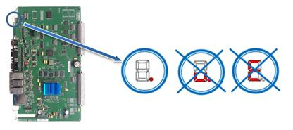
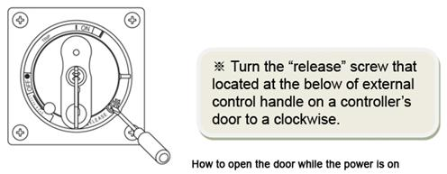
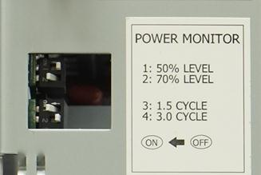

Caution
Once a controller is opened, please only check the main board's status and do not touch anything else for a safety reasons.
Please make sure to close it after you check the main board's status.
1.1.5.1. Outline
This error occurs when communication between a Main Board (BD511) and a Teach Pendant (TP520) has been disconnected due to a bad communication status. If this error occurring during an operation (AUTO mode), a robot will be immobilized.
1.1.5.2. Causes and examine methods
|
(1) Please check if the Main Board inside of a controller is in a normal status.
(2) Case: Status of 7-Segment from a Main Board is "." (normal) n Case: TP communication status indicator icon is white n Case: TP communication status indicator icon is x
(3) Case: Status of 7-Segment from a Main Board is "u." n TP communication status indicator icon will be x
(4) Case: Status of 7-Segment from a Main Board is abnormal n TP communication status indicator icon will be x |
(1) Please check if the Main Board inside of a controller is in a normal status
Communication can be disconnected if a Main Board or a Teach Pendant is in an abnormal status for any reasons. Please see the 7-Segment from a Main Board to confirm if a Main Board's status is normal or abnormal.

Figure 1.20 7-Segment is in a Normal Status. Others are Abnormal (see the above diagram)
If a controller's door is shut when the power is on, please refer to the below diagram in order to open the door to check.

|
|
Caution Once a controller is opened, please only check the main board's status and do not touch anything else for a safety reasons. Please make sure to close it after you check the main board's status. |
(2) Case: Status of 7-Segment from a Main Board is "." (normal)
Please check the status of "TP communication indicator icon" that located on a left side of "Titles" from TP511.
n If a TP communication status indicator icon is blue, it is a normal status.
n If a TP communication status indicator icon is white,
Ø LAN cable between a Main Board and TP has a problem (not open) or an abnormal status of Teach Pendant is suspected.
① Please download Main Board's application program as same version as a TP.
② Please replace TP511 and test it.
③ Please replace a LAN cable between TP connector and Main Board in a controller and test it.
④ If a same status persists, please contact to our AS department.
n If a TP communication status indicator icon is x,
Ø Disconnection (open) of LAN cable between a Main Board and TP is suspected.
① Please replace TP and test it.
② Please replace a LAN cable between TP connector and Main Board in a controller and test it.
③ If a same status persists, please contact to our AS department.
(3) Case: Status of 7-Segment from a Main Board is "u."
n TP communication status indicator icon will be x.
Ø It is suspected that there might be some problems with the main board, the state of SMPS insertion, or the setting of the SMPS switch.
① Check whether the main board is completely inserted into the rack.
② Check whether SMPS (HDI-191) is completely inserted into the rack or whether the bolts are completely fastened.
③ Check the state of the SMPS switch.

50% LEVEL: OFF,
70% LEVEL: ON,
1.5 CYCLE: ON,
3.0 CYCLE: OFF
④ If a same status persists, please contact to our AS department.
(4) Case: Status of 7-Segment from a Main Board is abnormal
n TP communication status indicator icon will be x.
Ø The cause for this case is a Main Board malfunction.
① Please replace a Main Board and test it.
② If a same status persists, please contact to our AS department.